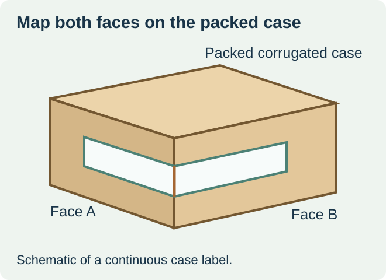
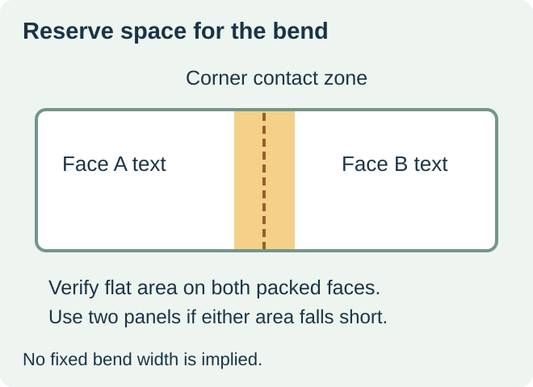

Choose one corner wrap when your line can apply a continuous label to the required adjacent faces and the erected corner gives it a stable landing surface. If either face needs a different position, the corner breaks the usable area, or the equipment supports only flat panels, price two independent labels and the required application steps.


Corner-wrap machinery is a real supply route. Videojet describes systems that apply a single label over two adjacent faces of a case. Ask the line owner for the supported face pair and how the actual case is presented. A capability described for a manufacturer’s equipment is specific to that equipment and configuration. Videojet corner-wrap applicator overview
Mark the two panels on an erected, packed case
Stand the case in the same orientation it takes on the conveyor. Mark the leading face, adjacent face and the edge between them. Then mark the usable flat areas, the seam or flap step, and any corrugate damage or compression that changes the corner. Repeat on the smallest and largest case variants proposed for the same format. A drawing of the flat blank cannot show all of these assembled conditions.
| What the packed-case check shows | Route to price first | What to verify |
|---|---|---|
| Stable adjacent faces and one supported wrap step | One continuous label | Actual bend zone, stock and legible width on each face |
| Interruption at the corner or independent readable positions | Two separate panel labels | Both label positions and the available application steps |
| One face becomes hidden in the normal load pattern | Review the receiving-facing position | Ask the receiver which face is accessible at the actual handoff |


Draw the bend zone before placing content
Ask the packer to mark where the label leaves the first flat face and reaches the second. Keep required fields in the supported flat areas. If the print shift or placement shift can move important text into the bend, shorten the field, move it, or change to a separate label with a larger stable area. Define the allowed placement and inspection using the buyer’s approved artwork and machine trial.
In a hypothetical chilled sauce shipment, a case has two reachable faces but the corner includes a thick overlap from its closure. A plain label on one flat face sticks well. That result leaves the wrap unresolved because the second face has to stay attached after the label bridges the step. Test the wrapped configuration on packed cases, including the normal handling route, or compare two flat placements if the step is outside the applicator’s supported geometry.
Check both faces at receiving
Ask which information must be visible from each approach and whether the fields must match. On the finished case, check actual readability and both landings after packing, handling and storage. If the plan uses two labels, record how the packer associates both pieces with one case and how it detects a missing or incorrect second label. Keep the physical placement decision separate from the assignment of case or pallet identifiers.
Request quotes for the complete application route. Include label construction and dimensions, the roll format for each station, usable quantity per order, and any extra application work. A continuous wrap may reduce handling steps on a compatible line. Separate panels can preserve readable area where the corner geometry is uncertain.
Discuss the unresolved label requirement
Send an erected case drawing with the two requested faces and leading edge marked, representative packed cases, the applicator model and label format, the fields on each face, the required exposure, and run quantities. Review food label options and prepare a label specification inquiry. The contact page opens an email draft and lists email or WhatsApp for attachments. Supply, proof options, testing, pricing and timing require project confirmation.